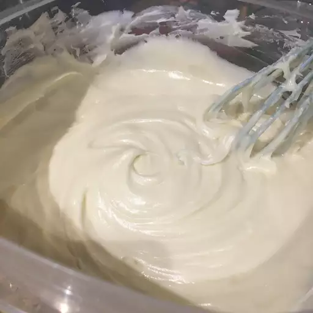

Cream Cheese Frosting

Tasty and simple cream cheese frosting.
Delicious and sweet cream cheese frosting. This a is a versatile recipe from AllRecipes that can top many treats.
Use this for brownies, cakes, or anything your heart desires. Try it with this brownie recipe: Brownies.
Ingredients
- Cream Cheese
- Butter
- Vanilla
- Icing Sugar
Steps
- Beat cream cheese, softened butter, and vanilla together in a large bowl with an electric misver until light and creamy.
- Gradually beat in icing sugar until smooth.
Recipes Home